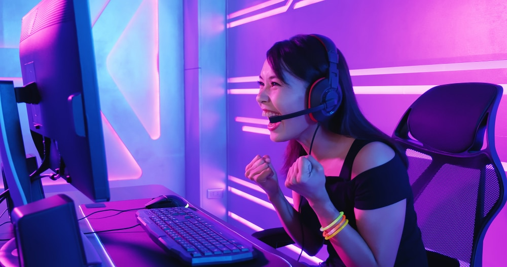
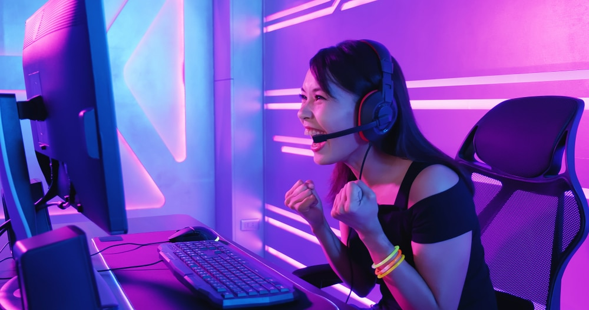
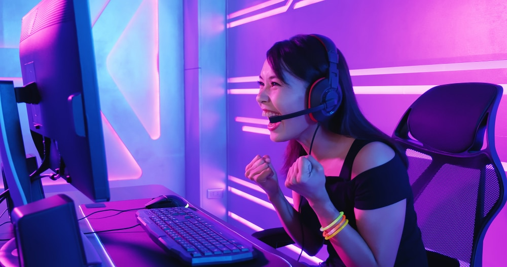
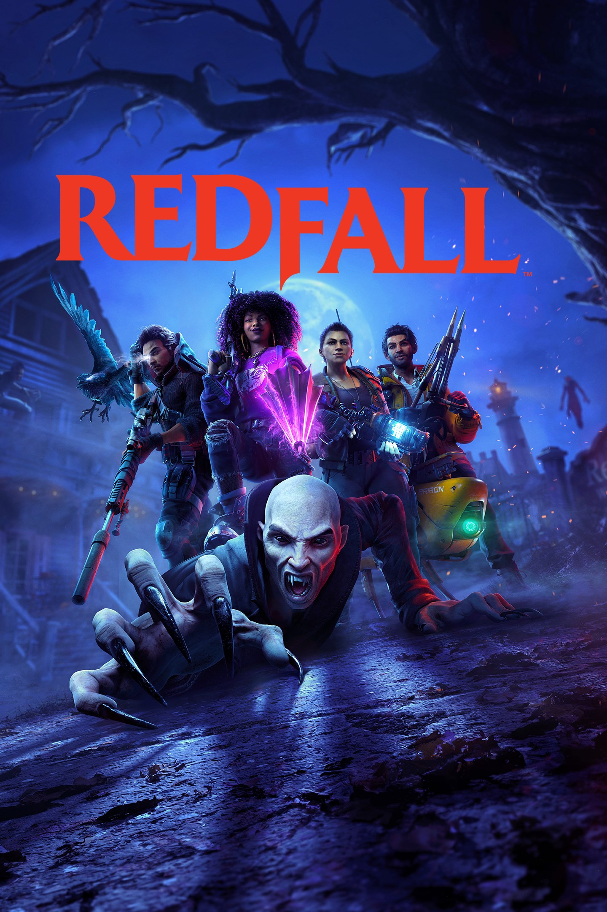
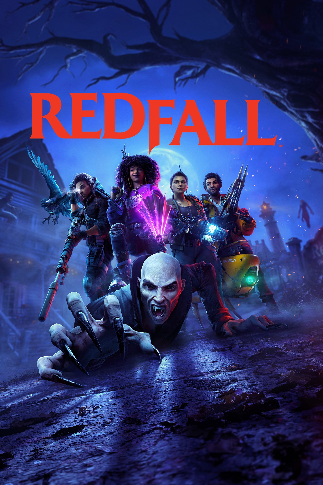

Nesta quarta-feira (15), é comemorado o “Dia do Consumidor”. Para celebrar a data, a Amazon está oferecendo 10% de desconto no console PS4 com o jogo “God of War Ragnarök” (link da oferta).
Menino de 10 anos recria Santuário Nacional em videogame (minecraft).
Gamer compra todos os jogos de Wii U e Nintendo 3DS após anúncio de encerramento permanente de venda.

Governo tributará jogos eletrônicos para compensar correção da tabela do IR.
The Last of Us atingiu uma audiência total de 30,4 milhões desde a sua estreia, em 15 de janeiro deste ano.
Mulheres gamers representam 51,5% do público de jogos eletrônico no Brasil.
Será que a moda pega? Plataforma de jogos lança 2x2 no League of Legends onde é possível apostar em você mesmo.
Pain Gaming e Loud se enfrentarão na grande final do cblol (campeonato brasileiro de league of legends) neste sábado dia 15 de abril.
Morre aos 60 anos de doença cardíaca isquêmica e Arterial Coronariana Aterosclerótica o ator Lance Reddick, dos jogos Destiny e Horizon, do filme John Wick e da serie Percy Jackson.
 

A PlayStation anunciou uma State of Play dedicada inteiramente a Final Fantasy XVI terá cerca de 20 minutos.
E3, maior feira de games do mundo após 2 anos de ausência devido o covid 19, é cancelada em 2023, por falta de interesse das publisher que opitaram por fazer seus proprios eventos online.
Redfall vem tendo vários problemas técnicos, tanto graficamente quanto em taxas de quadros, que serão em apenas 4k 30 fps para series X e pro series S será 1440p 30 fps, o porte a 60 fps só será lançado futuramente.
Cs 2 é oficialmente anunciado para 2023.
Teve a maior abertura de uma animação com 204.6 milhões no EUA e 171 milhões no resto do mundo, somando um total de 375.6 milhões de bilheteria.
Depois de 6 meses foi lançado o new game+ de God of War Ragnarok, trazendo grandes novidades, como várias armaduras, nivel maximo de equipamentos, dois encantamentos, chefes novos, arena expandida e modo preto e branco.